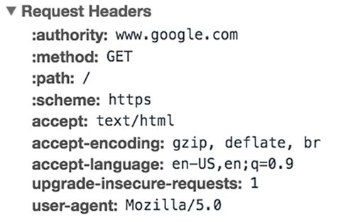
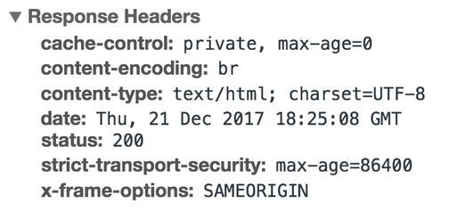
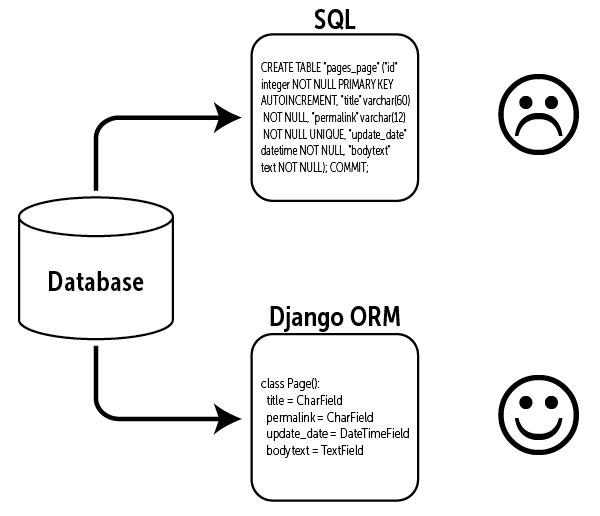
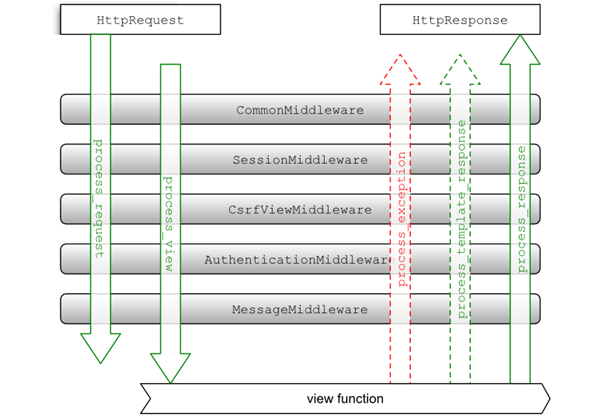

Hello and welcome to my Homepage, Here I've a brief introduction of my experiences and topics, I've studied Information Technology in both B.S. and M.S. grades. As a bachelor of science, I got familiar with some programming languages and concepts like Data bases, Algorithm Design, Data structure and other basic stuff, after that I started my M.S. in IT and got some experience in machine learning and python language, and finally graduated with 17.2. After that I got involved in real life projects, including basic frontend jobs with huge amount of code including HTML, CSS, JavaScript and bootstrap. But the main thing I've been focusing on, is Python, Django web framework and some machine learning experiences. I enjoy what I've found as interest in my career path and always looking forward to do challenging projects and joining dynamic work environments.
http
The Hypertext Transfer Protocol (HTTP) is the foundation of the World Wide Web, and is used to load web pages using hypertext links. HTTP is an application layer protocol designed to transfer information between networked devices and runs on top of other layers of the network protocol stack. A typical flow over HTTP involves a client machine making a request to a server, which then sends a response message. An HTTP request is the way internet communications platforms such as web browsers ask for the information they need to load a website. Each HTTP request made across the Internet carries with it a series of encoded data that carries different types of information. A typical HTTP request contains:
- HTTP version type
- a URL
- an HTTP method
- HTTP request headers
- Optional HTTP body.
HTTP request headers
HTTP headers contain text information stored in key-value pairs, and they are included in every HTTP request (and response, more on that later). These headers communicate core information, such as what browser the client is using what data is being requested. Example of HTTP request headers from Google Chrome's network tab:
HTTP request body
The body of a request is the part that contains the ‘body’ of information the request is transferring. The body of an HTTP request contains any information being submitted to the web server, such as a username and password, or any other data entered into a form.
HTTP response
An HTTP response is what web clients (often browsers) receive from an Internet server in answer to an HTTP request. These responses communicate valuable information based on what was asked for in the HTTP request.A typical HTTP response contains:
- HTTP status code
- HTTP response headers
- optional HTTP body
HTTP status code
HTTP status codes are 3-digit codes most often used to indicate whether an HTTP request has been successfully completed. Status codes are broken into the following 5 blocks:
- 1xx Informational
- 2xx Success
- 3xx Redirection
- 4xx Client Error
- 5xx Server Error
HTTP response headers
Much like an HTTP request, an HTTP response comes with headers that convey important information such as the language and format of the data being sent in the response body. Example of HTTP response headers from Google Chrome's network tab:
HTTP response body
Successful HTTP responses to ‘GET’ requests generally have a body which contains the requested information. In most web requests, this is HTML data which a web browser will translate into a web page.
Header, Param, Body
| header | param | body |
|
|
|
Django models can also have a sub-class called META for additional options MORE INFO HERE!
Sessions
When we use sessions, the data is not stored directly in the browser. Instead, it is stored in the server. Django creates a unique 32-character-long random string called a session key and associates it with the session data. The server then sends a cookie named sessionid, containing the session key, as value to the browser. On subsequent requests, the browser sends the cookie sessionid to the server. Django then uses this cookie to retrieve session data and makes it accessible in your code.
Reading and Writing Session Data
A Django request object has a session attribute that acts like a dictionary.
# set session data
request.session['user_id'] = '20'
request.session['team'] = 'Barcelona'
# read session data
request.session.get('user_id') # returns '20'
request.session.get('team') # returns 'Barcelona'
# delete session data
del request.session['user_id']
del request.session['user_id']Cookies
HTTP is a stateless protocol so when a request is sent to the server, it does not know whether you are requesting the page for the first time or you are the same user who has visited this page many times before. This HTTP statelessness was a problem for ecommerce website developers because persistence among requests could be used to recommend products or display products in a shopping cart. To appease this necessity, the cookie was introduced. A cookie is a small piece of data stored in the user’s browser which is sent by the server (once the cookie is set in the browser, it will be sent along with each request to the server). They are commonly used to store user preferences. The Django HttpResponse object has a set_cookie() method. AND every Django request object has a COOKIES attribute which is a dictionary. We can use COOKIES to read a cookie value, which returns a string even though you set an integer value.
Setting cookies in brwoser with django
def index(request):
response = render(request,'index.html',{'data':{}})
response.set_cookie(key='CookieKey',value='CookieValue',max_age=1)
return response
Getting cookies
request.COOKIES['CookieKey']print(request.COOKIES)
# {'csrftoken': 'LTBhaCx9A7Wxjz1PAxqavvzqGcI8VuFNXU13ZbMPIJaMHhVtj4BZ9onpFFYZw9od',
# 'sessionid': 'esy2tdxdjrvjj77g35skw1treza28cst',
# 'CookieKey': 'CookieValue'}
Deletion and update
To delete a cookie, simply call response.delete_cookie(‘cookie_name’). There is no cookie update method in HttpResponse, use set_cookie() to update the cookie value or expiry time.
Cookies vs localStorage vs sessionStorage in browsers
| Feature | Cookies | localStorage | sessionStorage |
|---|---|---|---|
| Maximum data size | 4 kB | 5 MB | 5 MB |
| Blockable by users | yes | yes | yes |
| Auto-expire option | yes | no | yes |
| Supported data types | string only | string only | string only |
| Browser support | very high | very high | very high |
| Accessible server-side | yes | no | no |
| Data transferred on every HTTP request | yes | no | no |
| Editable by users | yes | yes | yes |
| Supported on SSL | yes | n/a | n/a |
| Can be accessed on | server-side & client-side | client-side only | client-side only |
| Clearing / deleting | PHP, JS & automatic | JS only | JS & automatic |
| Lifetime | as specified | till deleted | till tab is closed |
| Secure data storage | no | no | no |

Signals
Signals are used to perform any action on modification of a model instance. The signals are utilities that help us to connect events with actions. We can develop a function that will run when a signal calls it. In other words, Signals are used to perform some action on modification/creation of a particular entry in Database. For example, One would want to create a profile instance, as soon as a new user instance is created in Database
signals.py
from users.models import Student
from django.db.models.signals import post_save
from django.dispatch import receiver
@receiver(post_save, sender=Student)
def alert(sender, instance, created, **kwargs):
if created:
print('---------- A STUDENT INSTANCE IS SAVED ----------')
# receiver – The function who receives the signal and does something.
# sender – Sends the signal
# created — Checks whether the model is created or not
# instance — created model instance
# **kwargs –wildcard keyword argumentsapps.py
class StudentSignal(AppConfig):
name = 'users'
# verbose_name = 'users'
def ready(self):
import users.signals__init__.py
default_app_config = 'users.apps.StudentSignal'Django Built-in Signals
Here you can find a list of some useful built-in signals. It is not complete, but those are the most common. Model Signals
django.db.models.signals.pre_init:
receiver_function(sender, *args, **kwargs)
django.db.models.signals.post_init:
receiver_function(sender, instance)
django.db.models.signals.pre_save:
receiver_function(sender, instance, raw, using, update_fields)
django.db.models.signals.post_save:
receiver_function(sender, instance, created, raw, using,
update_fields)
django.db.models.signals.pre_delete:
receiver_function(sender, instance, using)
django.db.models.signals.post_delete:
receiver_function(sender, instance, using)
django.db.models.signals.m2m_changed:
receiver_function(sender, instance, action, reverse, model, pk_set,
using)
Request/Response Signals
django.core.signals.request_started:
receiver_function(sender, environ)
django.core.signals.request_finished:
receiver_function(sender, environ)
django.core.signals.got_request_exception:
receiver_function(sender, request)
Object Relatoinal Mapping
One of the most powerful features of Django is its Object-Relational Mapper (ORM), which enables you to interact with your database, like you would with SQL. In fact, Django's ORM is just a pythonical way to create SQL to query and manipulate your database and get results in a pythonic fashion. Most common databases are programmed with some form of SQL, but each database implements SQL in its own way. SQL can also be complicated and difficult to learn. An ORM tool simplifies database programming by providing a simple mapping between an object (the ‘O’ in ORM) and the underlying database. This means the programmer need not know the database structure, nor does it require complex SQL to manipulate and retrieve data.
Get all objects
data = models.Student.objects.all()
# or
data = models.Student.objects.filter()
Get a single objects
data = models.Student.objects.get(pk=2)Get multiple objects(zero or more)
data = models.Student.objects.filter(field="ART")
data = models.Student.objects.filter(field="ART", department=2)
# using Django's field lookups:
data = models.Student.objects.filter(field__contains="INFO")
Ordering data
data = models.Student.objects.all().order_by('score') # ascending
# or in reverse order
data = models.Student.objects.all().order_by('-score') # descending
Slicing data
You can also return a fixed number of rows from the database using Python’s list slicing syntax. This is handy for when you are paginating data or want to return the Top 10, say, of a QuerySet.
data = models.Student.objects.all()[0:2]Update
models.Student.objects.filter(score=13).update(score=14)
# update can also modify multiple records:
models.Student.objects.all().update(score=20)
Delete
# delete() can be applied on single or multiple objects
models.Student.objects.all().delete()Q objects
Keyword argument queries – in filter(), etc. – are “AND”ed together. If you need to execute more complex queries (for example, queries with OR statements), you can use Q objects. A Q object (django.db.models.Q) is an object used to encapsulate a collection of keyword arguments.
Poll.objects.get(
Q(question__startswith='Who'),
Q(pub_date=date(2005, 5, 2)) | Q(pub_date=date(2005, 5, 6))
)Reverse relationship
class Group(models.Model):
#some attributes
class Profile(models.Model):
group = models.ForeignKey(Group)
#more attributesfrom a profile object, you can do profile.group. But if you want the profile objects given the group object, How would you do that? Thats' where related name or the reverse relationship comes in. Django, by defaults gives you a default related_name which is the ModelName (in lowercase) followed by _set - In this case, It would be profile_set, so group.profile_set.However, you can override it by specifying a related_name in the ForeignKey field.
class Profile(models.Model):
group = models.ForeignKey(Group, related_name='profiles')
#more attributesNow, you can access the foreign key as follows:
group.profiles.all()Related objects
ONE-TO-MANY: If a model has a ForeignKey, instances of that model will have access to the related (foreign) object via an attribute of the model.
# FORWARD
models.Student.objects.first().department
# BACKWARD
# considering related name in Student model: related_name='students'
models.Department.objects.first().students.all()
# code below will work if related name is not defined:
models.Department.objects.first().student_set.all()
MANY-TO-MANY:Both ends of a many-to-many relationship get automatic API access to the other end. The API works similar to a “backward” one-to-many relationship, above. One difference is in the attribute naming: The model that defines the ManyToManyField uses the attribute name of that field itself, whereas the “reverse” model uses the lowercased model name of the original model, plus '_set' (just like reverse one-to-many relationships).
# FORWARD
models.Student.objects.first().professor.all()
# BACKWARD
models.Professor.objects.first().students.all()
# or
models.Professor.objects.first().student_set.all()ONE-TO-ONE:relationships are very similar to many-to-one relationships. If you define a OneToOneField on your model, instances of that model will have access to the related object via an attribute of the model. The difference comes in “reverse” queries. The related model in a one-to-one relationship also has access to a Manager object, but that Manager represents a single object, rather than a collection of objects.
#FORWARD
models.Student.objects.first().user
# BACKWARD
get_user_model().objects.get(firstname="second").studentselect_related and prefetch_related
select_related is used for many-to-one relations:
# instead of:
books = Book.objects.all()
for book in books:
print(book.author.first_name)
# do this, cause it joins tables and prevents query flood:
books = Book.objects.select_related('author')
for book in books:
print(book.author.first_name)prefetch_related; select_related is faster and more efficient, but select_related could not be used for ManyToManyField. And that’s the main prefetch_related advantage.
Book.objects.all().prefetch_related('author')Aggregate and Annotate
Aggregate calculates values for the entire
queryset. Annotate calculates summary values
for each item in the queryset.
from django.db.models import Avg, Count
print('Aggregation')
print(models.Student.objects.aggregate(Avg('score')))
print('Annotation')
q = models.Student.objects.annotate(p_count=Count('professor'))
for st in q:
print(st.p_count)
# Aggregation
# {'score__avg': 19.25}
# Annotation
# 2
# 1
# 1
# 2
F expressions
what if you want to compare the value of a model field with another field on the same model? Django provides F expressions to allow such comparisons. Instances of F() act as a reference to a model field within a query. These references can then be used in query filters to compare the values of two different fields on the same model instance.
Entry.objects.filter(rating__lt=F('number_of_comments') + F('number_of_pingbacks'))(__)
print(models.get_user_model().objects.filter(student__score=17))
print(models.Professor.objects.filter(students__score=17))
Models.py
from dataclasses import field
from operator import mod
from pyexpat import model
from statistics import mode
from tkinter import CASCADE
from django.db import models
from django.contrib.auth import get_user_model
# Create your models here.
from django.contrib.auth.models import AbstractBaseUser, PermissionsMixin
from django.utils import timezone
from django.utils.translation import gettext_lazy as _
from users.managers import CustomUserManager
class CustomUser(AbstractBaseUser, PermissionsMixin):
phone = models.CharField(max_length=11, unique=True)
email = models.EmailField(_('email address'), unique=True)
username = models.CharField(max_length=100, unique=True)
firstname = models.CharField(max_length=100)
lastname = models.CharField(max_length=100)
national_code = models.CharField(max_length=10)
is_staff = models.BooleanField(default=False)
is_active = models.BooleanField(default=True)
date_joined = models.DateTimeField(default=timezone.now)
USERNAME_FIELD = 'phone'
REQUIRED_FIELDS = ['username','email','firstname', 'lastname', 'national_code']
objects = CustomUserManager()
def __str__(self):
return self.phone
class Department(models.Model):
name = models.CharField(max_length=100)
def __str__(self):
return self.name
class Employee(models.Model):
class Meta:
abstract = True
salary = models.IntegerField()
Department = models.ManyToManyField(Department,related_name='employee_department')
class Professor(Employee):
name = models.CharField(max_length=100)
def __str__(self):
return self.name
class Student(models.Model):
user = models.OneToOneField(CustomUser,
on_delete=models.CASCADE, primary_key=True)
score = models.IntegerField(default=20)
department = models.ForeignKey(Department, on_delete=models.CASCADE,related_name='students')
professor = models.ManyToManyField(Professor, related_name='students')
IT = "INFORMATION TECHNOLOGY"
MATH = "MATHEMATICS"
ART = "ART"
EE = "ELECTRONIC ENGINEERING"
CS = "COMPUTER SCIENCE"
STUDY_FIELD_CHOICES =(
(IT, "Information Technology"),
(MATH, "Mathematics"),
(ART, "Art"),
(EE, "Electronic Engineering"),
(CS, "Computer Science"),
)
field = models.CharField(choices=STUDY_FIELD_CHOICES,
max_length=100,
default=IT)
def __str__(self):
return (get_user_model().objects.get(id=self.user.id).firstname)
def __repr__(self):
return (get_user_model().objects.get(id=self.user.id).firstname)
class Project(models.Model):
name = models.CharField(max_length=150)
des = models.CharField(max_length=2000)
student = models.ForeignKey(Student, on_delete=models.CASCADE, related_name='student_projects')
def __str__(self):
return f'{self.name} , {self.student}'
Reference
built-in model methods that return QuerySets
| Method | Description |
|---|---|
filter() |
Filter by the given lookup parameters. Multiple parameters are
joined by SQL AND statements (See Chapter 4) |
exclude() |
Filter by objects that don’t match the given lookup parameters |
annotate() |
Annotate each object in the QuerySet. Annotations can be simple values, a field reference or an aggregate expression |
order_by() |
Change the default ordering of the QuerySet |
reverse() |
Reverse the default ordering of the QuerySet |
distinct() |
Perform an SQL SELECT DISTINCT query to eliminate
duplicate rows |
values() |
Returns dictionaries instead of model instances |
values_list() |
Returns tuples instead of model instances |
dates() |
Returns a QuerySet containing all available dates in the specified date range |
datetimes() |
Returns a QuerySet containing all available dates in the specified date and time range |
none() |
Create an empty QuerySet |
all() |
Return a copy of the current QuerySet |
union() |
Use the SQL UNION operator to combine two or more
QuerySets |
intersection() |
Use the SQL INTERSECT operator to return the shared
elements of two or more QuerySets |
difference() |
Use the SQL EXCEPT operator to return elements in
the first QuerySet that are not in the others |
select_related() |
Select all related data when executing the query (except many-to-many relationships) |
prefetch_related() |
Select all related data when executing the query (including many-to-many relationships) |
defer() |
Do not retrieve the named fields from the database. Used to improve query performance on complex datasets |
only() |
Opposite of defer()—return only the named fields
|
using() |
Select which database the QuerySet will be evaluated against (when using multiple databases) |
select_for_update() |
Return a QuerySet and lock table rows until the end of the transaction |
raw() |
Execute a raw SQL statement |
AND (&) |
Combine two QuerySets with the SQL AND operator.
Using AND (&) is functionally equivalent to
using filter() with multiple parameters |
OR (|) |
Combine two QuerySets with the SQL OR operator |
built-in model methods that don’t return QuerySets
| Method | Description |
|---|---|
get() |
Returns a single object. Throws an error if lookup returns multiple objects |
create() |
Shortcut method to create and save an object in one step |
get_or_create() |
Returns a single object. If the object doesn’t exist, it creates one |
update_or_create() |
Updates a single object. If the object doesn’t exist, it creates one |
bulk_create() |
Insert a list of objects in the database |
bulk_update() |
Update given fields in the listed model instances |
count() |
Count the number of objects in the returned QuerySet. Returns an integer |
in_bulk() |
Return a QuerySet containing all objects with the listed IDs |
iterator() |
Evaluate a QuerySet and return an iterator over the results. Can improve performance and memory use for queries that return a large number of objects |
latest() |
Return the latest object in the database table based on the given field(s) |
earliest() |
Return the earliest object in the database table based on the given field(s) |
first() |
Return the first object matched by the QuerySet |
last() |
Return the last object matched by the QuerySet |
aggregate() |
Return a dictionary of aggregate values calculated over the QuerySet |
exists() |
Returns True if the QuerySet contains any results
|
update() |
Performs an SQL UPDATE on the specified field(s)
|
delete() |
Performs an SQL DELETE that deletes all rows in the
QuerySet |
as_manager() |
Return a Manager class instance containing a copy
of the QuerySet’s methods |
explain() |
Returns a string of the QuerySet’s execution plan. Used for analyzing query performance |
field lookups
| Filter | Description |
|---|---|
exact/iexact |
Exact match. iexact is the case-insensitive version
|
contains/icontains |
Field contains search text. icontains is the
case-insensitive version |
in |
In a given iterable (list, tuple or QuerySet) |
gt/gte |
Greater than/greater than or equal |
lt/lte |
Less than/less than or equal |
startswith/istartswith |
Starts with search string. istartswith is the
case-insensitive version |
endswith/iendswith |
Ends with search string. iendswith is the
case-insensitive version |
range |
Range test. Range includes start and finish values |
date |
Casts the value as a date. Used for datetime field lookups |
year |
Searches for an exact year match |
iso_year |
Searches for an exact ISO 8601 year match |
month |
Searches for an exact month match |
day |
Searches for an exact day match |
week |
Searches for an exact week match |
week_day |
Searches for an exact day of the week match |
quarter |
Searches for an exact quarter of the year match. Valid integer range: 1–4 |
time |
Casts the value as a time. Used for datetime field
lookups |
hour |
Searches for an exact hour match |
minute |
Searches for an exact minute match |
second |
Searches for an exact second match |
isnull |
Checks if field is null. Returns True or
False |
regex/iregex |
Regular expression match. iregex is the
case-insensitive version |
introduction
In simple words a Middleware is something which acts as a bridge between two parts of a program or the system that enables communication between them. And technically Middleware is a framework of hooks into Django’s request/response processing. It’s a light, low-level “plugin” system for globally altering Django’s input or output. Each middleware component is responsible for doing some specific function. As shown in picutre below order of executing them is FILO.
Django's SessionMiddleware and AuthenticationMiddleware are based on this concept too, they receive request and see how the user status is, and based on that observation they decide what do, logging in, force logout, etc. middlewares take incoming request, work on it, validate it and pass it to next, until last one passes it to view and view passes the response to the last middleware and it goes reverse until firstmiddleware

Special methods of class-based middleware
process_request(self, request):The request object will be created while Django goes through process_request method in each middleware. After that, it resolves which view to be called soon after the request object is created with the help of ROOT_URLCONF key in settings file.process_view(request, view_func, view_args, view_kwargs):request is the HttpRequest object and view_func is the function that is being called. It will be called just before calling the view.process_response(self, request, response):The response will be the final output Django will process after executing the process_response method in each middleware which will be HttpResponse object.process_template_response(request, response):request is an HttpRequest object. response is the TemplateResponse object (or equivalent) returned by a Django view or by a middleware.process_exception(request, exception):request is an HttpRequest object. exception is an Exception object raised by the view function. This method is called when the view raises an exception.
New-style middleware does not call process_request and process_response by default. This functionally has been replaced with _call_ and the get_response function that is passed to _init_.
Custom middleware in django
Since Django 1.10, a middleware class must accept a get_response argument in its __init__() method and provide a __call__() method.
class CustomMiddleware(object):
def __init__(self, get_response):
"""
One-time configuration and initialisation.
"""
self.get_response = get_response
def __call__(self, request):
"""
Code to be executed for each request before the view (and later
middleware) are called.
"""
response = self.get_response(request)
return response
def process_view(self, request, view_func, view_args, view_kwargs):
"""
Called just before Django calls the view.
"""
return None
def process_exception(self, request, exception):
"""
Called when a view raises an exception.
"""
return None
def process_template_response(self, request, response):
"""
Called just after the view has finished executing.
"""
return responseThe process_view(), process_exception() and process_template_response() are special hooks, called by Django when processing the middleware, you may define in your middleware class. In the example above, the implemented hooks will do nothing special expect for making sure that Django will call the next middleware to further process the response/request. To activate the middleware component, add it to the MIDDLEWARE list in your Django settings.
MIDDLEWARE = [
# Default Django middleware
'django.middleware.security.SecurityMiddleware',
'django.contrib.sessions.middleware.SessionMiddleware',
'django.middleware.common.CommonMiddleware',
'django.middleware.csrf.CsrfViewMiddleware',
'django.contrib.auth.middleware.AuthenticationMiddleware',
'django.contrib.messages.middleware.MessageMiddleware',
'django.middleware.clickjacking.XFrameOptionsMiddleware',
# Add your custom middleware
'path.to.your.middleware.CustomMiddleware',
]A self-written example:
from django.conf import settings
class SimpleMiddleware:
def __init__(self, get_response):
self.get_response = get_response
# One-time configuration and initialization.
def __call__(self, request):
# Code to be executed for each request before
# the view (and later middleware) are called.
print("before responsevvvvvvvvvvvvvvvvvvvvvvvvvvvvvvvvvv")
response = self.get_response(request)
print("After response^^^^^^^^^^^^^^^^^^^^^^^^^^^^^^^^^^^")
# Code to be executed for each request/response after
# the view is called.
return response
def process_view(self, request, view_func, view_args, view_kwargs):
print('Called just before Django calls the view.........')
return None
def process_exception(self, request, exception):
if settings.DEBUG:
print(f'{exception.__class__.__name__}: {exception} ERROR HAPPENED DANGER!')
return None
def process_template_response(self, request, response):
"""
Called just after the view has finished executing.
"""
# only called when we have template response
return response
# Middlewares are hooks to modify Django request or response objects.
# You can use middleware if you want to modify the request i.e HttpRequest
# object which is sent to the view. Or you might want to modify the
# HttpResponse object returned from the view. Both these can be achieved
# by using middleware.
- django rest framework and token auth jwt
- redis
- celery
- rabbit mq
- docker
- ci di
Python has built-in exceptions that are raised when an error occurs in our program and if they are not handled the program will stop unexpectedly. Let's take a look at the program below:
pizza_eathers_count = [0,'4','five',2]
for count in pizza_eathers_count:
try:
print(f"count is {count} with {type(count)} type")
if not isinstance(count,int):
raise TypeError("not an integer!")
# raise Exception("not an integer!")
share = 1/int(count)
break
except ZeroDivisionError:
print('division by zero is not allowed, moving to next!')
except Exception as e:
print(f'{e.__class__.__name__} accourd, moving to next!')
print(f'share is {share}')
this program is getting number
of people who will eat a whole pizza and calculates the share of
each. we are simulating the case when user enters a number of invalid
inputs and we are handling them by making use of python Exceptions. first
we check the value and if its not an instance of python int
class we raise a TypeError, if not we try to do the
division and if it is successfull program ends. In case the in put is
0 the ZeroDivisionError will be raised and
we are gonna handle it, any othe Exception will be handled in
the
last part. out put looks like this:
count is 0 with <class 'int'> type
division by zero is not allowed, moving to next!
count is 4 with <class 'str'> type
Exception accourd, moving to next!
count is five with <class 'str'> type
Exception accourd, moving to next!
count is 2 with <class 'int'> type
share is 0.5
some code snippets on Exceptions:
#Catching specific exceptions
try:
# do something
pass
except ValueError:
# handle ValueError exception
pass
except (TypeError, ZeroDivisionError):
# handle multiple exceptions
# TypeError and ZeroDivisionError
pass
except:
# handle all other exceptions
pass
# we use else when we want to run some lines of
# code if others run without any errors
try:
num = int(input("Enter a number: "))
assert num % 2 == 0
except:
print("Not an even number!")
else:
reciprocal = 1/num
print(reciprocal)
# finally is executed no matter what,
# and is generally used to release external resources
try:
f = open("test.txt")
# perform file operations
finally:
f.close()
# print(dir(locals()['__builtins__']))
# above line shows python builtins including predifined exceptions
class AgeIsNotInRange(Exception):
def __init__(self,age,dummy_message,code=500, *args):
self.age = age
self.dummy_message = dummy_message
self.code = code
# super().__init__(self.dummy_message)
def __str__(self):
return f'ERROR, you entered age {self.age}, {self.dummy_message} - code {self.code}'
age = int(input('Please enter your age:'))
try:
if not 18<age<50:
raise AgeIsNotInRange(age, "Entered value is not in range")
except AgeIsNotInRange as e:
print(e)
Output for code above with invalid age is:
ERROR, you entered age 2, Entered value is not in range - code 500
# Iterator is an object that we can Iterate upon, which will return one Element at a time
# Iterator object has to implement two specia methods, __iter__() and __next__()
# both together we call them iterator
# built-ins in Python includign list, tuple, string etc. are iterables
L = [1,2,3,4,5]
L_iterabled = iter(L)
try:
print(L_iterabled.__next__())
print(next(L_iterabled))
print(L_iterabled.__next__())
print(next(L_iterabled))
print(L_iterabled.__next__())
print(next(L_iterabled))
except StopIteration as se:
pass
# implementation of for loop with iterators
L = [1,2,3,4,5]
# for item in L:
# print(item)
L_iterabled = iter(L)
while 1:
try:
print(L_iterabled.__next__())
except StopIteration:
break
# building custom iterables in python
class TwoPowFromZeroToNIterable:
def __init__(self, N=0):
self.N = N
def __iter__(self):
self.i=0
return self
def __next__(self):
if self.i <= self.N:
result = 2 ** self.i
self.i += 1
return result
else:
raise StopIteration
iterabled=iter(TwoPowFromZeroToNIterable(3))
print(next(iterabled))
print(next(iterabled))
print(next(iterabled))
print(next(iterabled))
print(next(iterabled))
infinity = iter(int,'CatchMe')
while True:
print(next(infinity))
# this one will stop immediately
# infinity = iter(int,0)
# while True:
# print(next(infinity))
# Python generators are a simple way of creating iterators.
# Simply speaking, a generator is a function that returns an object (iterator)
# which we can iterate over (one value at a time).
# LOCAL VARIABLES ARE REMEMBERED IN EACH CALL
# If a function contains at least one yield statement (it may contain other yield or return statements),
# it becomes a generator function.
# Both yield and return will return some value from a function.
# The difference is that while a return statement terminates a function entirely,
# yield statement pauses the function saving all its states and later continues
# from there on successive calls.
# 1. Generator function contains one or more yield statements.
# 2. When called, it returns an object (iterator) but does not start execution immediately.
# 3. Methods like __iter__() and __next__() are implemented automatically. So we can iterate through the items using next().
# 4. Once the function yields, the function is paused and the control is transferred to the caller.
# 5. Local variables and their states are remembered between successive calls.
# 6. Finally, when the function terminates, StopIteration is raised automatically on further calls.
def gen():
counter = 0
print('first time')
yield counter
print('second time')
counter += 1
yield counter
print('third time')
counter += 1
yield counter
# print(next(gen())) provids first yield
# print(next(gen())) provids first yield
# print(next(gen())) provids first yield
g = gen()
print(next(g))
print(next(g))
print(next(g))
# print(next(g)) this will raise StopIteration
print('------------------------------')
# g is finished so we create a new one
g = gen()
for i in g:
print(i)
print('getting one item at a time')
# print(next(i)) this is wrong!
def upperchar(string):
for i in range(0,len(string),1):
yield string[i].upper()
gen = upperchar('hello')
# print(next(gen))
# print(next(gen))
# print(next(gen))
# print(next(gen))
# print(next(gen))
# print(next(gen)) will raise StopIteration
for i in gen:
print(i)
# Generator Expression
# python generators can be created on the fly, just link lists but instead of
# [] we will use () and diffirence is that list create whole items at once
# but generators will create items in a lazy way when asked for, one at a time
# and for this reasone they are memory efficient than lists
baselist = [1,2,3]
l = [i*2 for i in baselist]
print(l) # [2, 4, 6]
g = (i*2 for i in baselist)
print(g) # at 0x0000029006DAD350>
print(next(g))
print(next(g))
print(next(g))
# print(next(g)) # StopIteration
# Generator expressions can be used as function arguments
print(sum(i*2 for i in baselist)) # 12
print('---------------------------')
# Generators can be implemented in a clear and concise way as compared to their iterator class counterpart
# remember TwoPowFromZeroToNIterable from Iterators in pervious section
# now it's implemented using generators
def TwoPowFromZeroToNGenerator(max=0):
n = 0
while n < max:
yield 2 ** n
n += 1
x = TwoPowFromZeroToNGenerator(4)
# print(next(x))
# print(next(x))
# print(next(x))
# print(next(x))
# print(next(x)) StopIteration
for i in x:
print(i)
# Generator implementation of such sequences is memory friendly and is preferred since it only produces one item at a time.
# Generators are excellent mediums to represent an infinite stream of data. Infinite streams
# cannot be stored in memory, and since generators produce only one item at a time, they can
# represent an infinite stream of data.
# The following generator function can generate all the even numbers (at least in theory).
def all_even():
n = 0
while True:
yield n
n += 2
# Multiple generators can be used to pipeline a series of operations.
# This is best illustrated using an example.
# Suppose we have a generator that produces the numbers in the Fibonacci
# series. And we have another generator for squaring numbers.
# If we want to find out the sum of squares of numbers in
# the Fibonacci series, we can do it in the following way
# by pipelining the output of generator functions together.
def fibonacci_numbers(nums):
x, y = 0, 1
for _ in range(nums):
x, y = y, x+y
yield x
def square(nums):
for num in nums:
yield num**2
print(sum(square(fibonacci_numbers(10))))
Data Types in python
Python has the following data types built-in by default, in these categories:
| Text | str |
| Numeric | int,
float,
complex |
| Sequence | list,
tuple,
range |
| Mapping | dict |
| Set | set,
frozenset
|
| Boolean | bool |
| Binary |
bytes, bytearray,
memoryview
|
| None | NoneType |
above, Mutable
types and Immutable types are illustrated colors
Mutable and Immutable
Mutable |
Immutable |
| The objects can be modified after the creation as well. | Objects can not be modified after their creation of the objects. |
| Example: Lists, Dicts, Sets, User-Defined Classes, Dictionaries, etc. | Example: int, float, bool, string, Unicode, tuple, Numbers, etc. |
# Mutables example
l = [1,2,3]
l [0] = 0
# print(l) #[0, 2, 3]
dic = {
"firstname": "joe",
"lastname": "green"
}
dic["firstname"] = "john"
# print(dic) # {'firstname': 'john', 'lastname': 'green'}
s = {"apple", "banana", "cherry"}
s.update(("grape",))
# print(s) # {'cherry', 'banana', 'apple', 'grape'}# Immutables example
my_tuple = (1,2,3)
# my_tuple[0] = 1 # TypeError: 'tuple' object does not support item assignment
##############################################################################
s = "Hello"
print(id(s)) # 2379890681328
# s[0] = "J" # TypeError: 'str' object does not support item assignment
s = "Jello"
print(id(s)) # 2379890681136
##############################################################################
x = 1
y = x
print(id(x),id(y)) # 140727861057184 140727861057184
y = 2
print(x) # 1
print(id(x),id(y)) # 140727861057184 140727861057216Pass reference and value
Passed by value means when primative data like int, str, bool types or immutable data types like tuple are passd to a function in python all the values are copied over into that function, resulting in if data changes inside the function it won't change outside the function.
Passed by reference means when mutable data such as list, dict, set or etc. passed to a function, only the reference of those objects are passed to function resulting in if they change inside the functino, the change will also be reflected in outside the fucntion.
def pass_by_value(num):
num+=1
num=0
print(num) # 0
pass_by_value(num)
print(num) # 0
def pass_by_reference(mylis):
mylis.append('100')
mylis=[1,2,3]
print(mylis) # [1, 2, 3]
pass_by_reference(mylis)
print(mylis) # [1, 2, 3, '100']
# other example
def passed(x,l):
x += 1
l.append('Hello')
x = 0
l = [1,2.3]
print(x,l) # 0 [1, 2.3]
passed(x,l)
print(x,l) # 0 [1, 2.3, 'Hello']
# in case we want to avoid function effect on mutables
# we have to copy them, either manually or by built-in
# copy() method
def passbyrefbutcopy(l):
l.pop()
l = ["a","b"]
print(l)
passbyrefbutcopy(l.copy())
# copiedlist = [i for i in l]
# passbyrefbutcopy(copiedlist)
print(l)# playing around with ids and references
main = [1,2]
main_assign = main
main_copy = main.copy()
print(main, main_assign, main_copy) # [1, 2] [1, 2] [1, 2]
print(id(main), id(main_assign), id(main_copy)) # 2283015860864 2283015860864 2283014782720
print(main==main_assign,
main==main_copy,
main_assign==main_copy
) # True True True
print(id(main)==id(main_assign),
id(main)==id(main_copy),
id(main_assign)==id(main_copy)
) # True False False
print(main is main_assign,
main is main_copy,
main_assign is main_copy
) # True False FalseDeep copy vs Shallow copy
Assignment statements in Python do not copy objects, they create bindings between a target and an object. For collections that are mutable or contain mutable items, a copy is sometimes needed so one can change one copy without changing the other. The difference between shallow and deep copying is only relevant for compound objects (objects that contain other objects, like lists or class instances):
- A shallow copy constructs a new compound object and then (to the extent possible) inserts references into it to the objects found in the original.
- A deep copy constructs a new compound object and then, recursively, inserts copies into it of the objects found in the original.
Two problems (which can be avoided) often exist with deep copy operations that don’t exist with shallow copy operations:
- Recursive objects (compound objects that, directly or indirectly, contain a reference to themselves) may cause a recursive loop.
- Because deep copy copies everything it may copy too much, such as data which is intended to be shared between copies.
# assignment for very shallow copy
li1 = [1, 2, [3,5], 4]
li2 = li1
print(li1) # [1, 2, [3, 5], 4]
li2[0] = 7777
li2[2][0] = 7777
print(li1) # [7777, 2, [7777, 5], 4] ******************
print(li2) # [7777, 2, [7777, 5], 4]
from copy import copy
# copy for shallow copy
li1 = [1, 2, [3,5], 4]
li2 = copy(li1)
print(li1) # [1, 2, [3, 5], 4]
li2[0] = 7777
li2[2][0] = 7777
print(li1) # [1, 2, [7777, 5], 4] *********************
print(li2) # [7777, 2, [7777, 5], 4]
from copy import deepcopy
# deepcopy for deep copy
li1 = [1, 2, [3,5], 4]
li2 = deepcopy(li1)
print(li1) # [1, 2, [3, 5], 4]
li2[0] = 7777
li2[2][0] = 7777
print(li1) # [1, 2, [3, 5], 4] ************************
print(li2) # [7777, 2, [7777, 5], 4]Map function
# The map() function applies a given function to each item of an iterable
# (list, tuple etc.) and returns an iterator.
# without using map
l = [1,2,3,4,5,6]
lp2 = []
for item in l:
lp2.append(item**2)
print(lp2) # [1, 4, 9, 16, 25, 36]
# using map
def p2(i):
return i*i
lp2mapfunctoin = list(map(p2,l))
print(lp2mapfunctoin) # [1, 4, 9, 16, 25, 36]
# using map with lambda
lp2map = map(lambda x : x**2 ,l)
# print(lp2map) # Filter function
# The filter() function extracts elements from an iterable
# (list, tuple etc.) for which a function returns True.
l = [x for x in range(1,11)]
def check_even(x):
if x % 2 == 0:
return True
else:
return False
print(list(filter(check_even,l))) # [2, 4, 6, 8, 10]
# above example using lambda
print("using lambda: ",list(filter(lambda x : x%2==0 ,l)))
# using lambda: [2, 4, 6, 8, 10]Reduce function
# The reduce() function accepts a function and a sequence and returns a single value
# calculated as follows:
# 1. Initially, the function is called with the first two items from the sequence
# and the result is returned.
# 2. The function is then called again with the result obtained in step 1 and the
# next value in the sequence. This process keeps repeating until there are items
# in the sequence.
from functools import reduce # only in python3
# Returns the sum of all the elements using `reduce`
result = reduce((lambda a, b: a + b), [1, 2, 3, 4])
print(result) # 10# simple decorator
def decorator(f):
def inner():
print("I got decorated")
f()
return inner
@decorator #means pass the following functoin to decorator and run decorator
def smiple_function():
print("I'm a simple function...")
smiple_function()
# def smiple_function():
# print("I'm a simple function...")
# decorated = decorator(smiple_function)
# decorated()
# decorating functions with parameters
def legalize(func):
def inner(x, y):
if y == 0:
print("Zero division is not allowed...")
return
return func(x, y)
return inner
@legalize
def divide(x, y):
print(x/y)
divide(4,0)
# parameters of the nested inner() function inside the decorator is the same as
# the parameters of functions it decorates. Taking this into account, now we
# can make general decorators that work with any number of parameters.
# In Python, this magic is done as function(*args, **kwargs). In this way,
# args will be the tuple of positional arguments and kwargs will be the
# dictionary of keyword arguments.
def any_param(func):
def inner(*args, **kwargs):
print('Extra job Done!')
print(args[0])
return func(*args, **kwargs)
return inner
@any_param
def func(x,y,z):
print(x,y,z)
func('Apple', 'Cherry', 'Banana')
# Chaining Decorators in Python
def put_stars(f):
def inner(*arg, **kwarg):
print(30*'*')
f(*arg,**kwarg)
print(30*'*')
return inner
def put_at(f):
def inner(*arg, **kwarg):
print(30*'@')
f(*arg,**kwarg)
print(30*'@')
return inner
@put_at
@put_stars
def say(msg):
print(msg)
@put_stars
@put_at
def say2(msg):
print(msg)
say('Hello wit *')
say2('Hello with @')
# I got decorated
# I'm a simple function...
# Zero division is not allowed...
# Extra job Done!
# Apple
# Apple Cherry Banana
# @@@@@@@@@@@@@@@@@@@@@@@@@@@@@@
# ******************************
# Hello wit *
# ******************************
# @@@@@@@@@@@@@@@@@@@@@@@@@@@@@@
# ******************************
# @@@@@@@@@@@@@@@@@@@@@@@@@@@@@@
# Hello with @
# @@@@@@@@@@@@@@@@@@@@@@@@@@@@@@
# ******************************
# Syntax of Lambda Function in python
# lambda arguments: expression
makesum = lambda x,y : x+y
print(makesum(2,3))
# Use of Lambda Function in python
# We use lambda functions when we require a nameless function for a
# short period of time.
# In Python, we generally use it as an argument to a higher-order
# function (a function that takes in other functions as arguments).
# Lambda functions are used along with built-in functions like
# filter(), map() etc.
# to see examples of using lambda with built-in functions,
# see built-in functions in python topic# global variables are read-only in the functions local space
x = "GLOBAL"
def foo():
# x = x + "IS COOL" # UnboundLocalError: local variable 'x' referenced before assignment
print("x inside:", x) # x inside: GLOBAL
foo()
print("x outside:", x) # x outside: GLOBAL
# local variables which are defined inside functions
# are not recognized outside of the function
def foo():
y = "local"
foo()
print(y) # NameError: name 'y' is not defined
# Creating a local variable in python
def foo():
y = "local"
print(y)
foo()
# write on read-only globals inside the function's local space
# accessing it with """global""" keyword
x = "global "
def foo():
global x
y = "local"
x = x * 2
print(x) # global global
print(y) # local
foo()
print(f'x after calling foo is >>> {x}') # x after calling foo is >>> global global
x = 5
def foo():
x = 10
print("local x:", x)
print("global x before local x in function:", x)
foo()
print("global x after local x in function:", x)
# global x before local x in function: 5
# local x: 10
# global x after local x in function: 5
# changin global variable in nested function
x = 'global'
def outer():
x = "local"
print("outer function's x is >>> ", x)
def inner():
global x
x = "nonlocal"
print("inner x is >>> ", x)
inner()
print("outer function's x is >>> ", x)
outer()
print("global x is >>> " , x)
# outer function's x is >>> local
# inner x is >>> nonlocal
# outer function's x is >>> local
# global x is >>> nonlocal
# changin local variable of outer function in the nested function's scope
x = 'global'
def outer():
x = "local"
print("outer function's x is >>> ", x)
def inner():
# x = x * 2 # will raise error if we comment 2 lines below but reading is ok
nonlocal x
x = "nonlocal"
print("inner x is >>> ", x)
inner()
print("outer function's x is >>> ", x)
outer()
print("global x is >>> " , x)
# outer function's x is >>> local
# inner x is >>> nonlocal
# outer function's x is >>> nonlocal
# global x is >>> globaldef print_msg(msg):
# This is the outer enclosing function
def printer():
# This is the nested function
print(msg)
return printer # returns the nested function
# Now let's try calling this function.
# Output: Hello! "Hello" is still remembered even when the
# execution of print_msg is over and it has returned a function
another = print_msg("Hello")
del print_msg
another()
# error = print_msg("Hello") # NameError
# from programize
# The print_msg() function was called with the string "Hello"
# and the returned function was bound to the name another. On
# calling another(), the message was still remembered although
# we had already finished executing the print_msg() function.
# This technique by which some data ("Hello in this case) gets
# attached to the code is called closure in Python.
# This value in the enclosing scope is remembered even when the
# variable goes out of scope or the function itself is removed
# from the current namespace.
# When do we have closures?
# As seen from the above example, we have a closure in Python when a
# nested function references a value in its enclosing scope.
# The criteria that must be met to create closure in Python are
# summarized in the following points:
# @ We must have a nested function (function inside a function).
# @ The nested function must refer to a value defined in the enclosing function.
# @ The enclosing function must return the nested function.
# When to use closures?
# So what are closures good for?
# Closures can avoid the use of global values and provides some form of
# data hiding. It can also provide an object oriented solution to the problem.
# When there are few methods (one method in most cases) to be implemented in
# a class, closures can provide an alternate and more elegant solution. But
# when the number of attributes and methods get larger, it's better to
# implement a class.
# Here is a simple example where a closure might be more preferable than
# defining a class and making objects. But the preference is all yours.
# example below:
def make_multiplier_of(n):
def multiplier(x):
return n * x
return multiplier
x3 = make_multiplier_of(3)
x5 = make_multiplier_of(5)
print(x3(5)) # 15
print(x5(5)) # 25
print(x3(x5(2))) # 30
# Python Decorators make an extensive use of closures as well.
print(x3.__closure__) # (| ,)
print(x3.__closure__[0].cell_contents) # 3
print(x5.__closure__[0].cell_contents) # 5 | Class attributes and object attributes
class Parrot:
# class attribute, same for all instances
species = "bird"
# instance attribute
def __init__(self, name, age):
self.name = name
self.age = age
# instantiate the Parrot class
blu = Parrot("Blu", 10)
woo = Parrot("Woo", 15)
# access the class attributes
print("Blu is a {}".format(blu.__class__.species))
print("Woo is also a {}".format(woo.__class__.species))
# access the instance attributes
print("{} is {} years old".format( blu.name, blu.age))
print("{} is {} years old".format( woo.name, woo.age))
# Blu is a bird
# Woo is also a bird
# Blu is 10 years old
# Woo is 15 years old
Methods
class Parrot:
# instance attributes
def __init__(self, name, age):
self.name = name
self.age = age
# instance method
def sing(self, song):
return "{} sings {}".format(self.name, song)
def dance(self):
return "{} is now dancing".format(self.name)
# instantiate the object
blu = Parrot("Blu", 10)
# call our instance methods
print(blu.sing("'Happy'"))
print(blu.dance())
Inheritance
# parent class
class Bird:
def __init__(self):
print("Bird is ready")
def whoisThis(self):
print("Bird")
def swim(self):
print("Swim faster")
# child class
class Penguin(Bird):
def __init__(self):
# call super() function
print("Penguin is getting ready")
super().__init__()
print("Penguin is ready")
def whoisThis(self):
print("Penguin")
def run(self):
print("Run faster")
peggy = Penguin()
peggy.whoisThis()
peggy.swim()
peggy.run()
# In the above program, we created two classes i.e. Bird (parent class)
# and Penguin (child class). The child class inherits the functions of
# parent class. We can see this from the swim() method.
# Again, the child class modified the behavior of the parent class.
# We can see this from the whoisThis() method. Furthermore, we extend
# the functions of the parent class, by creating a new run() method.
# Additionally, we use the super() function inside the __init__()
# method. This allows us to run the __init__() method of the parent
# class inside the child class.Polymorphism
Polymorphism is the ability of object of different types to be handled by a common interface.
class Parrot:
def fly(self):
print("Parrot can fly")
def swim(self):
print("Parrot can't swim")
class Penguin:
def fly(self):
print("Penguin can't fly")
def swim(self):
print("Penguin can swim")
# common interface
def flying_test(bird):
bird.fly()
#instantiate objects
blu = Parrot()
peggy = Penguin()
# passing the object
flying_test(blu)
flying_test(peggy)
Encapsulation (including private attributes)
Encapsulation is wrapping code and data together into a single unit. Class is an example of encapsulation, because it wraps the method and property. Encapsulation - is the process of enclosing data and functions manipulating this data into a single unit, so that to hide the internal implementation from the outside world.
class Computer:
def __init__(self):
self.__maxprice = 900
def sell(self):
print("Selling Price: {}".format(self.__maxprice))
def setMaxPrice(self, price):
self.__maxprice = price
c = Computer()
c.sell()
# print(c.__dir__())
# change the price
# c._Computer__maxprice = 1000 # how to fuck with python
c.__maxprice = 1000
c.sell()
# using setter function
c.setMaxPrice(1000)
c.sell()
# Using OOP in Python, we can restrict access to methods and variables.
# This prevents data from direct modification which is called
# encapsulation. In Python, we denote private attributes using
# underscore as the prefix i.e single _ or double __.
# _foo: this is just a convention, a way for the programmer to indicate
# that the variable is private (whatever that means in Python).
# __foo: this has real meaning: the interpreter replaces this name with
# _classname__foo as a way to ensure that the name will not overlap with
# a similar name in another class.
# Here, we have tried to modify the value of __maxprice outside of
# the class. However, since __maxprice is a private variable, this
# modification is not seen on the output.
# As shown, to change the value, we have to use a setter function
# i.e setMaxPrice() which takes price as a parameter.
Abstraction
Abstraction is hiding internal details and showing
functionality only.
Abstraction focus on what the object does instead of how it does.
It provides generalized view of classes.
Here, ToString() is abstraction. And how this mechanism number
variable converted to string and initialize into aStringNumber is
encapsulation.
int number = 5;
string aStringNumber = number.ToString();# Example of abstraction
class Item():
...
...
...
def __connect(self, smpt_server):
print('Connecting...')
def __prepare_body(self):
return f"""
hello someone.
we have {self.name} {self.quantity} times.
regards, rick...
"""
def __send(self):
pass
def send_email(self):
self.__connect("")
self.__prepare_body()
self.__send()
print('email sent...')
item1 = Item("MyItem", 750, 6)
# item1._Item__connect("")
item1.__connect("") # AttributeError: 'Item' object has no attribute '__connect'Real world example, Encapsulation vs Abstraction
Let us take a real world example of calculator. Encapsulation is the internal circuits, battery, etc., that combine to make it a calculator. Abstraction is the different buttons like on-off, clear and other buttons provided to operate it.
Classmethod
The class method can be called both by the class and its object.
class Person:
age = 25
@classmethod
def printAge(cls):
print('The age is:', cls.age)
# or use this to create printAge class method
# Person.printAge = classmethod(Person.printAge)
Person.printAge()
# In the final line, we call printAge without creating a Person object
# like we do for static methods. This prints the class variable age.
# When do you use the class method?
# Factory methods: Factory methods are those methods that return a
# class object """(like constructor) for different use cases""".(class method
# as constructor)
from datetime import date
class Person:
def __init__(self, name, age):
self.name = name
self.age = age
@classmethod
def fromBirthYear(cls, name, birthYear):
return cls(name, date.today().year - birthYear)
def display(self):
print(self.name + "'s age is: " + str(self.age))
person = Person('Adam', 19) # Adam's age is: 19
person.display()
person1 = Person.fromBirthYear('John', 1990)
person1.display() # John's age is: 32
# Here, we have two class instance creator, a constructor and a
# fromBirthYear method. The constructor takes normal parameters name
# and age. While, fromBirthYear takes class, name and birthYear,
# calculates the current age by subtracting it with the current year
# and returns the class instance. The fromBirthYear method takes Person
# class (not Person object) as the first parameter cls and returns the
# constructor by calling cls(name, date.today().year - birthYear), which
# is equivalent to Person(name, date.today().year - birthYear)
# should we use class method or static method as constructor in base class?
from datetime import date
class Person:
def __init__(self, name, age):
self.name = name
self.age = age
@staticmethod
def fromFathersAge(name, fatherAge, fatherPersonAgeDiff):
return Person(name, date.today().year - fatherAge + fatherPersonAgeDiff)
@classmethod
def fromBirthYear(cls, name, birthYear):
return cls(name, date.today().year - birthYear)
def display(self):
print(self.name + "'s age is: " + str(self.age))
class Man(Person):
sex = 'Male'
man = Man.fromBirthYear('John', 1985)
print(isinstance(man, Man)) # True
man1static = Man.fromFathersAge('John', 1965, 20)
print(isinstance(man1static, Man)) # False
print(man1static.__class__) # <class '__main__.Person'>
print(man.__class__) # <class '__main__.Man'>
# Here, using a static method to create a class instance wants us to hardcode the
# instance type during creation. This clearly causes a problem when inheriting
# Person to Man. fromFathersAge method doesn't return a Man object but its base
# class Person's object. This violates the OOP paradigm. Using a class method as
# fromBirthYear can ensure the OOP-ness of the code since it takes the first
# parameter as the class itself and calls its factory method.
Static method
Static methods, much like class methods, are methods that are bound to a class rather than its object. They do not require a class instance creation. So, they are not dependent on the state of the object. The difference between a static method and a class method is:
- Static method knows nothing about the class and just deals with the parameters.
- Class method works with the class since its parameter is always the class itself.
Class.staticmethodFunc()
or even
Class().staticmethodFunc()# When do you use static methods?
# 1. Grouping utility function to a class
# Static methods have a limited use case because, like class methods or any other
# methods within a class, they cannot access the properties of the class itself.
# However, when you need a utility function that doesn't access any properties of
# a class but makes sense that it belongs to the class, we use static functions.
# Create a utility function as a static method
class Dates:
def __init__(self, date):
self.date = date
def getDate(self):
return self.date
@staticmethod
def toDashDate(date):
return date.replace("/", "-")
date = Dates("15-12-2016")
dateFromDB = "15/12/2016"
dateWithDash = Dates.toDashDate(dateFromDB)
if(date.getDate() == dateWithDash):
print("Equal") # if condition is true prints Equal
else:
print("Unequal")Class method vs Static method
|
Static Method |
Class Method |
|---|---|
|
The |
The |
|
No specific parameters are used. |
It takes cls as the first parameter. |
|
It cannot access or modify the class state. |
It can access or modify the class state. |
|
Static methods do not know about the class state. These methods are used to do some utility tasks by taking some parameters. |
The class method takes the class as a parameter to know about the state of that class. |
|
Static methods are used to do some utility tasks. |
Class methods are used for factory methods. |
|
It contains totally self-contained code. |
It can modify class-specific details. |
Property
By using property() method, we can modify our class and implement the value constraint without any change required to the client code. So that the implementation is backward compatible. The property() takes four optional parameters:
- fget (optional) - Function for getting the attribute value. Defaults to None.
- fset (optional) - Function for setting the attribute value. Defaults to None.
- fdel (optional) - Function for deleting the attribute value. Defaults to None.
- doc (optional) - A string that contains the documentation (docstring) for the attribute. Defaults to None.
class Person:
def __init__(self, name):
self._name = name
def get_name(self):
print('Getting name')
return self._name
def set_name(self, value):
print('Setting name to ' + value)
self._name = value
def del_name(self):
print('Deleting name')
del self._name
# Set property to use get_name, set_name
# and del_name methods
name = property(get_name, set_name, del_name, 'Name property')
p = Person('Adam')
print(p.name)
p.name = 'John'
del p.name
# Getting name
# The name is: Adam
# Setting name to John
# Deleting name
# Using @property decorator
class Person:
def __init__(self, name):
self._name = name
@property
def name(self):
print('Getting name')
return self._name
@name.setter
def name(self, value):
print('Setting name to ' + value)
self._name = value
@name.deleter
def name(self):
print('Deleting name')
del self._name
p = Person('Adam')
print('The name is:', p.name)
p.name = 'John'
del p.name
# Getting name
# The name is: Adam
# Setting name to John
# Deleting nameSuper
In Python, super() has two major use cases:
- Allows us to avoid using the base class name explicitly
- Working with Multiple Inheritance
class Car:
def __init__(self,type):
print(f'{type} is a type of car.')
class Truck(Car):
def __init__(self, truck_name):
print(f'{truck_name} is a truck.')
super().__init__('Truck')
ford = Truck('F-150')
# Since we do not need to specify the name of the base
# class when we call its members, we can easily change
# the base class name (if we need to). class Vehicle: ...
# Super and multiple inheritance:
class Car:
def __init__(self,type):
print(f'{type} is a type of car.')
class Truck(Car):
def __init__(self, truck_name):
print(f'{truck_name} is a truck.')
super().__init__('Truck')
class BigTruck(Truck):
def __init__(self, big_truck_name):
print(f'{big_truck_name} is a big truck.')
super().__init__(big_truck_name)
class CoolTruck(Truck):
def __init__(self, cool_truck_name):
print(f'{cool_truck_name} is a cool truck!')
super().__init__(cool_truck_name)
class PopularTruck(BigTruck, CoolTruck):
def __init__(self, popular_truck_name):
print(f'{popular_truck_name} is a popular truck.')
super().__init__(popular_truck_name)
f150 = PopularTruck('F-150')
print('')
# F-150 is a popular truck.
# F-150 is a big truck.
# F-150 is a cool truck!
# F-150 is a truck.
# Truck is a type of car.
chevi = BigTruck('chevi')
print('')
# chevi is a big truck.
# chevi is a truck.
# Truck is a type of car.
# Method Resolution Order (MRO)
# Method Resolution Order (MRO) is the order in which methods should be
# inherited in the presence of multiple inheritance. You can view the MRO
# by using the __mro__ attribute.
print(PopularTruck.__mro__)
# (
# <class '__main__.PopularTruck'>,
# <class '__main__.BigTruck'>,
# <class '__main__.CoolTruck'>,
# <class '__main__.Truck'>,
# <class '__main__.Car'>,
# <class 'object'>
# )
# in the example above Big truck appeared first and then the cool truck
# because BigTruck appeared first and then CoolTruck
Duck typing
Type doesn't matter, but behavior does, so if something acts like a duck we will call it duck, no matter what it is. Polymorphism is the ability of object of different types to be handled by a common interface. While duck typing, is a kind of dynamic typing that allows objects of different types to respond to the same methods.
class Duck:
def quak(self):
return('quak')
def walk(self):
return('funny walk')
def swim(self):
return('awesom swiming')
class TrainedDog:
def quak(self):
return('quak')
def walk(self):
return('funny walk')
def swim(self):
return('awesom swiming')
def guarding(self):
return('watching neighborhood')
dog = TrainedDog()
duck = Duck()
if (
dog.quak() == duck.quak() and
dog.walk() == duck.walk() and
dog.swim() == duck.swim()
):
print('dog is a duck')- *args and **kwargs
- Rgex
- Design patterns
- Multiprocessing
- Async programming and asyncio
- Datetime
- Files and directories
- Python Modules